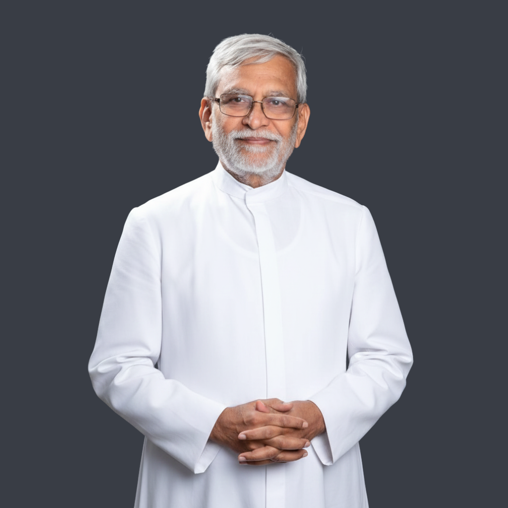

Shri Ankushrao Kadam
Chancellor, MGM University
A visionary philanthropist shaping lives through values-driven leadership.
When everything seems still, between what has ended and what is about to start, there is a quiet glow that stays alive in the ashes. Like a small ember, this gentle light holds the power to grow into a strong fire again. Our lives are like that, sometimes shining bright with success, and sometimes calm and quiet. Before success blazes, a small spark quietly rises, refusing to fade as it stirs to life like an ember.
Nothing powerful ever starts big. Sometimes an ember is enough. The word “ember” means small, glowing fragments of fuel that remain after a fire has gone out. It is what stays after everything seems to have burned out. Though fragile, it holds the power within itself to reignite the flame and burn brighter than before. In life, an ember symbolizes moments when energy, passion, and hope fade, but an inner spark urges “one more try”.
Life’s journey includes both bright flames and low phases, but it’s crucial not to lose passion. These difficult phases, like embers glowing faintly in the ashes, remind us that even when the fire seems gone, the spark of renewal is still alive. Like embers resting in the ashes, our spirit too holds memories of the fire. Even when dimmed, it waits patiently for a breeze and some time to awaken again. Every ember carries within itself a quiet yet powerful reassurance of a new beginning. Ashes Crumble, Embers Don’t.
Chancellor, MGM University
A visionary philanthropist shaping lives through values-driven leadership.
Scientist, Chemist, Educator and Academician
Pioneering chemical engineer & inventor shaping green chemistry globally.
Legendary Golfer, Founder - The Golf Foundation, RKP Puraskar Recipient, Arjuna Awardee
Amit Luthra is an Indian golfer, TGF founder, and Managing Partner at Luthra & Luthra.
Space Expert, Sustainability Strategist, Tech Leader
Founder of EarthSight Foundation, applies space tech and environmental science to community projects for planet health.
CEO Coach, Systems Thinker, PhD Scholar
Leadership coach scaling India's fastest-growing companies and empowering women.
Business Leader
IIT-IIM alumnus building thriving alumni ecosystems across India.
Chef, Educator, Entrepreneur
Self-made chef building authentic culinary community with food and purpose.
Social Activist, Disability Rights Advocate
Diksha Dinde, disability rights advocate, and Amol Sutar, a thoughtful educator-publisher
Farmer-Entrepreneur, Agroforestry Innovator
A UNCCD-recognised ‘Land-Hero' and Founder of Agro Rangers.
TED is a nonprofit global platform dedicated to “Ideas Change Everything”. Started as a four-day conference in California 30 years ago, TED has grown to support its mission with multiple initiatives. The two annual TED Conferences invite the world's leading thinkers and doers to speak for 18 minutes or less. Many of these talks are then made available, free, at TED.com. TED speakers have included Bill Gates, Jane Goodall, Elizabeth Gilbert, Sir Richard Branson, Nandan Nilekani, Philippe Starck, and many more.
In the spirit of 'Ideas Change Everything', TEDx is a program of local, self-organized events that bring people together to share a TED-like experience. At a TEDx event, TEDTalks video and live speakers combine to spark deep discussion and connection in a small group. These local, self-organized events are branded TEDx, where x = independently organized TED event. The TED Conference provides general guidance for the TEDx program, but individual TEDx events are self-organized.
On our campus, the first TEDx event, TEDxJNEC took place in 2018 followed by 2019 and 2021 (Virtual Mode) and from 2023 TEDxJNEC was renamed to TEDxMGMU. marking its growth to a university level platform. The voyage continued further with the fifth edition in 2024. This year we are proud to present the sixth edition of TEDx, TEDxMGMU 2026.
Reliving the moments that sparked endless possibilities

We extend our heartfelt gratitude to the MGMU administration, faculty advisors, our incredible speakers, generous sponsors, and every individual who believed in our vision. Your support has helped us transform a simple idea into a celebration of human potential and innovation.